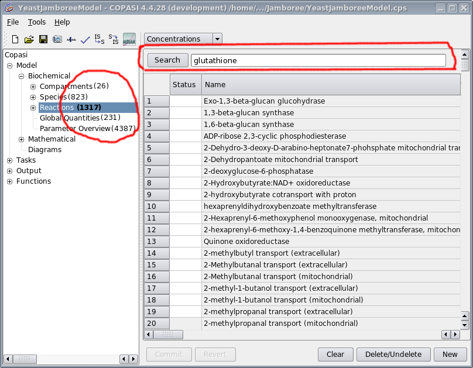

Table of Contents:
- Total number of Objects
- In object browser
- In Tables
- Table
- Sorting
- Searching
- Filtering
- Parameter Overview
- Numbers of items in sub branches
- Search
Prototype page showing object counts (on the left) and search box for objects of this class). Search box should be in all tables of objects.
